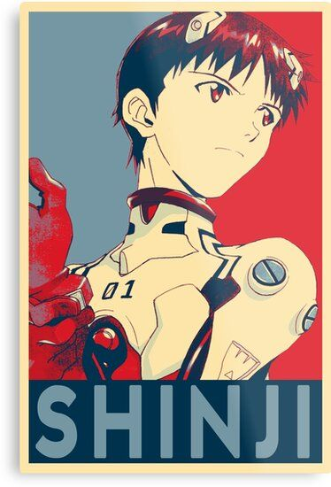
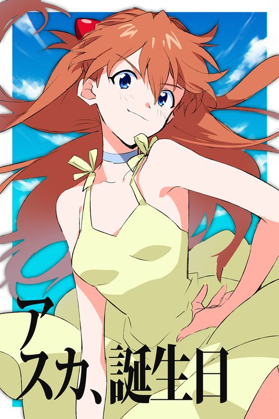

Neon Genesis Evangelion (新世紀エヴァンゲリオン Shin Seiki Evangerion), también conocida simplemente como ( Evangelion o Eva ) es una serie de anime creada por el estudio Gainax y animada por Tatsunoko Production, dirigida por (Hideaki Anno). La historia de la obra se da lugar en un mundo futurista en el que una organización paramilitar llamada NERV protege a la humanidad de los ataques de seres de origen y naturaleza desconocidos, los «Ángeles», utilizando para ello bio mechas humanoides llamados Evangelion (acortado a EVA).
A medida que avanza la trama, esta se vuelve paulatinamente más confusa y psicológica, en donde las personalidades de los personajes se hacen cada vez más inestables y su desarrollo se torna fundamental.Hideaki Anno,el director ha expresado que el desarrollo de la serie estuvo inspirado en su propia experiencia, en virtud de la cual los personajes muestran una amplia gama de sus afecciones emocionales y de su personalidad.

Asuka Langley Soryu (惣流・アスカ・ラングレー, Sōryū Asuka Rangurē ) es la Second Children elegida por el Instituto Marduk, designada como piloto del Evangelion Unidad 02..

Destacan de su aspecto su pelo rojo llameante, que recoge con sus y sus ojos azules, posiblemente provenientes de su herencia genética alemana.Su mejor amiga es su compañera y representante de clase, Hikari Horaki.